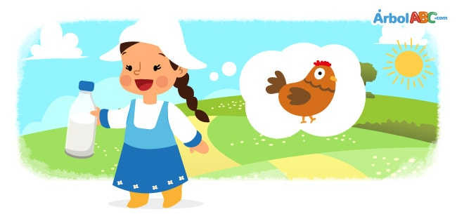

.: ERI :.
The Milkmaid and Her Pail
Once there was a young milkmaid who was going to the market carrying a jug of milk. While walking, she thought about all the things she would do with the money she would get for selling her milk.
“When they pay me,” she said to herself, “I'll buy some chickens. The chickens will lay a lot of eggs which I will sell at the market. With the money I make from the eggs I will buy myself a dress and very elegant shoes. Then I will go to the fair and since I will look so beautiful, all the boys will want to come and talk to me.”
Thinking of everything she would do with the money from selling her milk, the maid soon became distracted and tripped on a stone. Her jug broke, spilling all the milk. With the jug broken, so too were her dreams of the chickens and eggs, the dress and shoes.